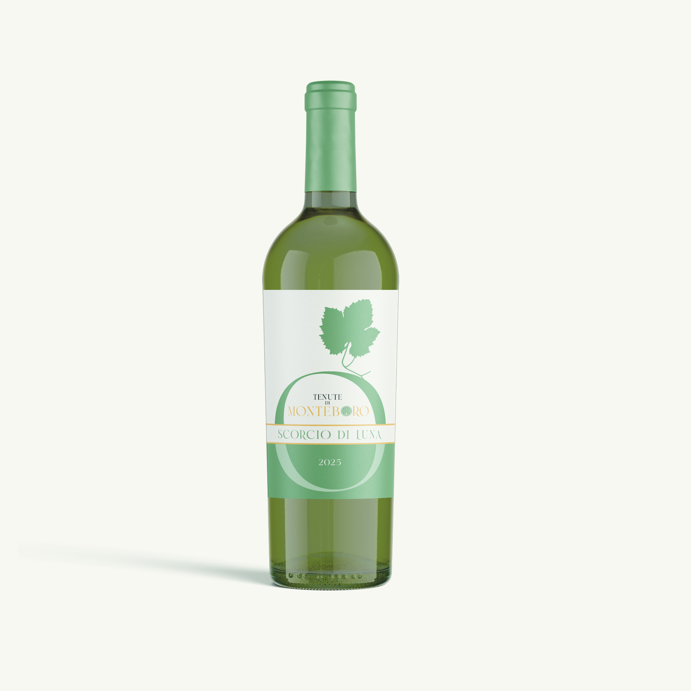

Tenute di Monteboro
Scorcio di Luna
Il profilo aromatico richiama note floreali e agrumate, con una bevibilità nitida e una chiusura armonica. La struttura è leggera ma precisa, ideale per lasciare spazio alla pulizia del sorso.
La bottiglia è inserita a sinistra per mettere in evidenza l'immagine del prodotto, mentre a destra resta uno spazio ampio per la descrizione completa e i dettagli di degustazione.
- Colore: giallo paglierino brillante
- Al naso: fiori bianchi, agrumi, erbe leggere
- Abbinamenti: pesce, antipasti delicati, piatti estivi